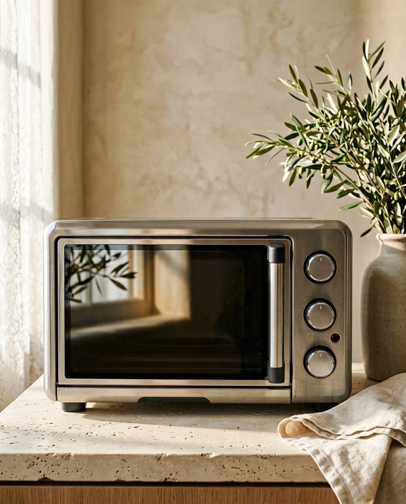

The campaign
desk.
A field journal for the home edit. See what readers explore, where they click, and what the reports actually show.
Explore the signals ↓
Reader signals
Checking the first-party counter…
Campaign ledger
Only authorized first-party reports belong here. A click is not an order.
| Date (UTC) | Source | Channel | Eligible sessions | Clicks | Reported orders |
|---|
No reports recorded. No conversion rate or revenue forecast.
Flagged for Review
Executive summary
The submitted list contains four entries and three distinct short URLs. See the product register for observed destinations. Those observations do not establish the intended ASINs or attribution to shopnow047c-20. No order report was supplied. Publish buyer guidance, not performance rankings, until authorized evidence is available.
Link intent & attribution
Short-link compliance is unresolved, not invalid. The Associates Operating Agreement §1 calls for properly tagged Special Links. Test each intended listing and confirm the tracking report in the enrolled account before enabling product CTAs.
Hosting & measurement
GitHub Pages is static; it cannot run this counter. The self-hosted preview can receive opted-in events. Review Pages usage limits before operating a primarily commercial site there. No authorized Search Console or Associates report is connected to this desk.
Privacy preferences
Allow this site's counter to store daily event totals? No visitor identifier, IP address, query string, or referrer is stored by the counter. Your preference stays in this browser. Hosting providers may log requests separately.